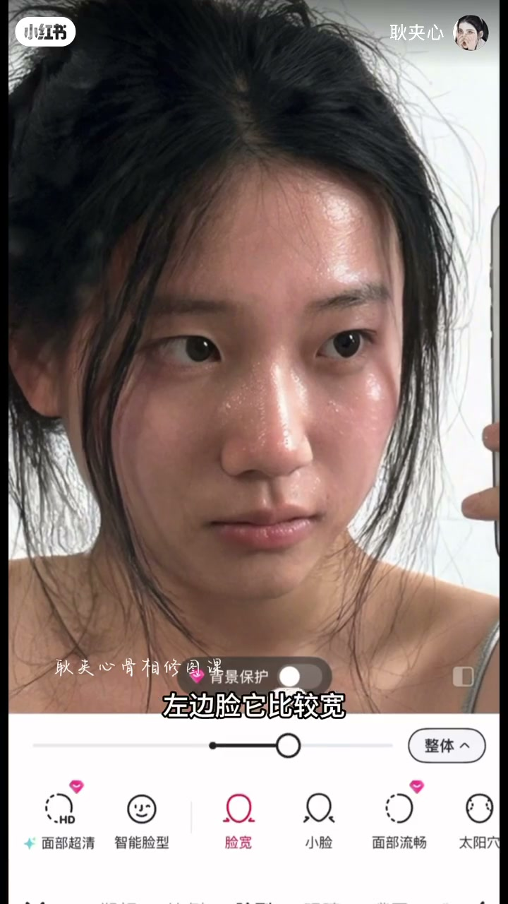
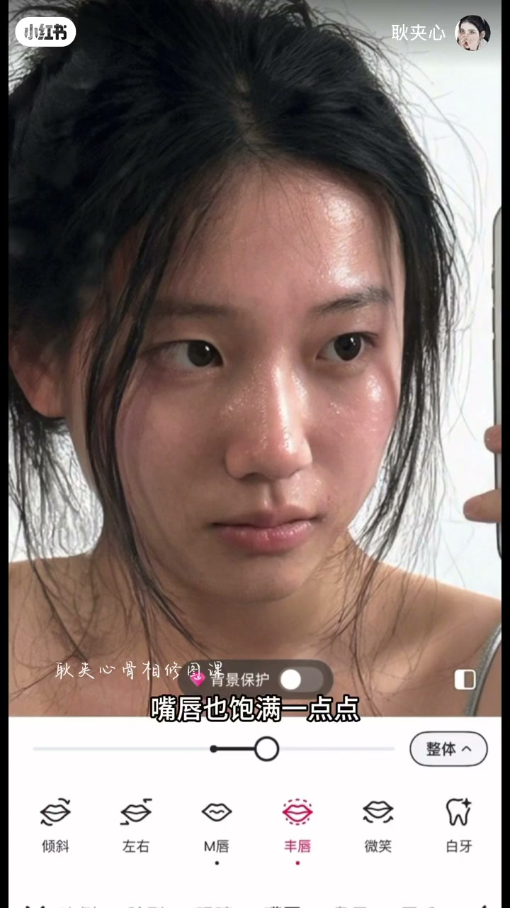
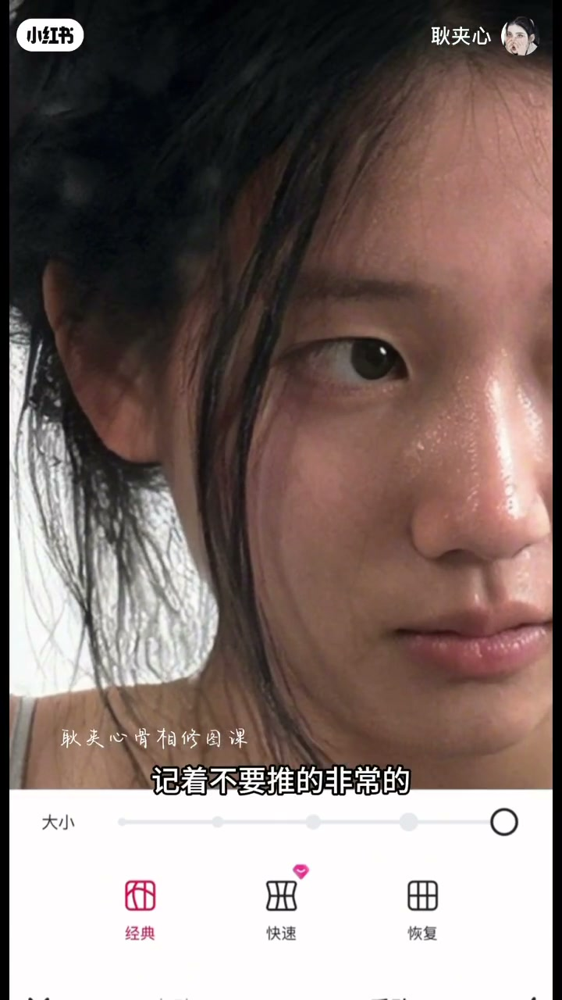
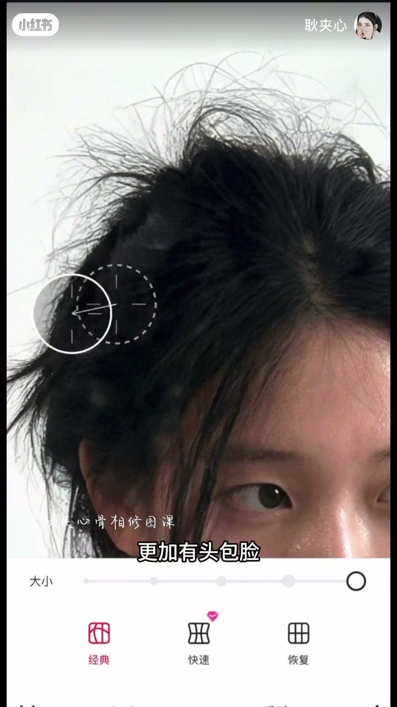
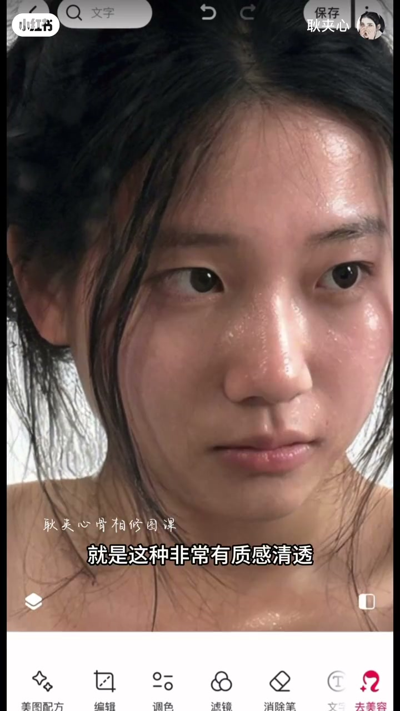

内容要点
「耿夹心骨相修图课」用阔面素颜示例走完整修图：先收脸宽与五官比例（鼻、唇、发际线、额头），再补头发蓬松度与体态（颅顶、斜方肌）。口播强调「别推得太流畅」「别硬造直角肩」——保留骨骼拐角，才像真骨相。前约1分钟 Whisper 几乎空白，开篇以画面字幕（脸宽等）重建。
知识结构
画面在「脸宽」等工具上微调；字幕点出左边脸偏宽，先从整体比例下手。
鼻略拉长、唇珠更明显、唇略薄；脸修长后嘴显宽再收宽；发际线略降，比例更舒服。
额头内收、脸型微收；保留骨骼拐角，避免推太流畅出现「劈突」假痕。
加蓬松抬高颅顶显脸小；斜方肌下推即可，勿硬推直角肩。
后段继续细节与质感收束；片尾点出「有质感清透」的含细修图风格。
阔面骨相修图的关键是比例与结构：先收宽再微调五官，手推保留拐角；发量与斜方肌只做「轻薄体态」，不做假直角肩。
00:00-01:23从脸宽到五官发际线：先把比例摆正
开场画面叠「耿夹心骨相修图课」，修图界面点到「脸宽」等工具，字幕提到左边脸偏宽——阔面案例先从整体收宽，而不是一上来猛磨皮。前约一分钟口播 ASR 失效，步骤以画面字幕与工具栏为准。
进入可核验口播后：鼻略短则适当拉伸；唇珠更明显、嘴唇略薄；脸修长后视觉上嘴更宽，再微调嘴宽。五官微调结束后降一点偏高的发际线——变化不大，但整体比例更舒服，作者点题「调整比例的重要性」。


01:23-02:24手推保留拐角，发量与斜方肌只做轻薄
手动推细节：额头偏宽则内收，脸型也可微收。关键提醒：推脸型不要过分流畅——真人脸有「骨骼拐角」，推太流畅会出现不自然的劈突痕迹，微微调整即可；五官改动同样要适度。
两个重点：头发蓬松度与体态。发量增多会抬高颅顶、视觉上脸更小；斜方肌往下推一推即可，体态更轻薄。明确反对把肩膀一路推成直角肩——「很假」。只处理明显斜方肌区域。


02:24-03:58清透质感收尾
后段继续在原图上收细节与肤质（中间约一分钟口播再次稀疏），片尾总结这种「有质感、清透」的含细修图风格——目标是修了像没修假，而不是模板直角肩。
脚注：00:00–01:00、02:24–03:54 等多段 Whisper 空白或乱码，开篇与后段叙述依据画面字幕与工具操作重建。

完整转录（36段）
以下文本由 Whisper medium 模型自动转录，可能存在少量识别误差，已尽可能修正。
就大家怎么把这种素颜扩扩扩脸的字
这比小猪有点短,咱们需要把鼻子适当的拉伸
唇珠明显一些,嘴唇也薄慢一点点
因为把脸修长之后会视觉让现的我们嘴巴比较宽
宽度稍微调整一下
好,这个是五官方面我们的微调
紧接着可以去调整一下发肌线
发肌线有一点点高,咱们往下降低一些
虽然变化不大,但是整体的比例会更舒服
这个就是调整比例的一个重要性
接着咱们手动去推一下细节的地方
就比如说额头这一块它有点宽
往内收,脸型这一块也可以稍微往内收一些
我们在推脸型的时候记得不要推得非常的流畅
因为脸型的话很多时候我们有自带的一些骨骼拐垫
如果你推得太流畅的话它会有一些就是劈突痕迹
不是很自然
微微调整一下就可以了
比如说五官方面那些地方需要去更改的话
咱们也是非常适度的去修
有两个非常重要的点需要去动
一个是我们的头发的蓬松度
还有一个是体态方面
我觉得颅顶它很重要
如果发量增多之后
视觉上会显得颅顶更高
跟样样有头包裂
也会显得脸更小
斜方肌这一块往下推一推
我们在修身体的时候不用说把肩膀一直要推一推推
推成这种直角肩
其实这种的话就很假
我们只需要去把明显的一些斜方肌这一块往下适当的推一推
显得我们的体态比之前要好一些轻薄一些就可以了
把我们原来
这种非常有质感清透的一个含细的修头风格